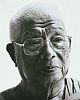

32 excerpts, 2:12:08 total duration

4. Story: Ajahn Chah visits Massachusetts. Told by Jack Kornfield. [Culture/West] [Ajahn Chah] // [Joseph Kappel] [Ajahn Buddhadāsa] [Culture/Natural environment]
29. “Can you give us a short bio on each of you please?” [Western Ajahn Chah lineage] // [Birth] [Monastic life/Motivation]
Ajahn Yatiko is on his way to Tibet, but two Thai men in a restaurant persuade him to visit Wat Pah Pong. [Ajahn Yatiko] [Travel] [Vajrayāna] [Wat Pah Pong] [Ajahn Pasanno] [Wat Pah Nanachat] [Ajahn Sumedho] [Ordination] [Gratitude]
Bhante Suddhaso finds his way to Abhayagiri through Zen. [Zen] [Ajahn Chah] [Vinaya] [Theravāda] [Abhayagiri]
Ajahn Karuṇadhammo ordains at Abhayagiri after many years of lay practice. [Ajahn Karuṇadhammo] [Lay life]
Anagārika Jordan (now Ajahn Sudhīro) learns about Buddhism in college and has just taken up anagārika training at Abhayagiri. [Postulants]
Debbie Stamp travels in Asia, hears a talk by Ajahn Buddhadāsa, spends ten months at Amaravati and Chithurst, then volunteers to help start Abhayagiri. [Debbie Stamp] [Ajahn Buddhadāsa] [Amaravati] [Chithurst]
Quote: “She’s the mother of our monastery.” — Ajahn Yatiko.
1. “I can control the mind’s attitude about physical pain. Is it possible to control the pain?” Answered by Ajahn Pasanno. [Pain] // [Rapture]
Story: Ajahn Buddhadāsa deals with the pain of an operation using samādhi. [Ajahn Buddhadāsa] [Health care] [Concentration]
Story: Ajahn Chah reflects on pain after an operation. [Ajahn Chah]
2. Ajahn Ñāṇiko speaks about the time Luang Por Liem spent at Suan Mokh. [Wat Suan Mokkh] [Ajahn Liem]
Recollection: The Thai translations in the Wat Pah Pong chanting book come from Ajahn Buddhadāsa. [Chanting] [Wat Pah Pong] [Thai] [Translation] [Ajahn Buddhadāsa]
Recollection: Ajahn Liem reads and comments on the monthly poem in the Ajahn Buddhadāsa calendar. [Ajahn Buddhadāsa] [Artistic expression]
1. Story: Meeting Buddhism in Thailand and becoming a Saṅghapāla board member. Told by Fred Kral. [Culture/Thailand] [Saṅghapāla] // [Ajahn Buddhadāsa] [Wat Ram Poeng] [Ajahn Chah] [Meditation retreats] [Dhammapala] [Debbie Stamp] [Ajahn Amaro]
14. “What are the biggest misconceptions about being ordained?” Answered by Ajahn Pasanno. [Monastic life ] // [Selfishness ]
Story: Ajahn Pasanno visits Ajahn Buddhadāsa: “Don’t be selfish!” [Ajahn Buddhadāsa] [Ajahn Pasanno]
1. Comment: I heard that often when Ajahn Buddhadāsa would be receiving guests he might have a chicken under his arm. And if a mosquito landed on him, he would gently move the chicken towards the mosquito, and that way he wasn’t breaking the Vinaya. [Ajahn Buddhadāsa ] [Animal] [Killing]
Response by Ajahn Amaro: His presence was like sitting in front of a living mountain. [Ajahn Buddhadāsa ] [Personal presence]
Story: Ajahn Amaro’s visit to Suan Mokh in 1998. [Wat Suan Mokkh] [Ajahn Amaro] [Ajahn Paññānanda] [Ajahn Buddhadāsa ] [Non-identification] [Teaching Dhamma] [Ajahn Santikaro]
4. “I’ve been pondering Ajahn Chah’s phrase, ‘Right but not true; true but not right.’ I’ve never been able to figure our ‘Right but not true.’ …” Answered by Ajahn Amaro. [Ajahn Chah] [Truth] // [Clear comprehension]
Quote: “You are right in fact but wrong in Dhamma.” — Ajahn Chah. [Dhamma]
Story: Ajahn Sumedho reports Ajahn Buddhadāsa’s different approach to Vinaya to Ajahn Chah. [Ajahn Sumedho] [Ajahn Buddhadāsa] [Vinaya]
Story: Ajahn Sumedho criticizes an outspoken monk’s loud speech at Pāṭimokkha. The monk leaves Wat Pah Pong soon after. [Harsh speech] [Admonishment/feedback]
4. Story: Huineng evades his pursuers with a koan. Told by Ajahn Amaro. [Koan] [Huineng]
Follow-up: “Do you know why Huineng returned after sixteen years?”
Recollection: Ajahn Buddhadāsa translated a few Chinese Buddhist texts into Thai. [Ajahn Buddhadāsa] [Translation] [Ajahn Chah]
1. Story: Ajahn Buddhadāsa gives up formal studies and returns to the forest and the suttas. Told by Ajahn Pasanno. [Ajahn Buddhadāsa ] [Learning] [Commentaries] [Sutta] // [Spiritual traditions] [Geography/Thailand]